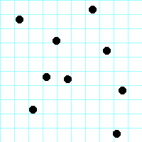
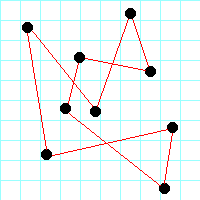

Suppose there are a number of "cities," as in Figure 1 below. The distance between any two cities is the standard Euclidean distance, that is, √((x1-x2)2+(y1-y2)2). A traveling salesman wishes to visit every city exactly once, then return to his starting point. (It doesn't matter what city is the starting point.) Such a path is called a circuit, as in Figure 2. However, the salesman also wishes to minimize the total distance that must be traveled.
|  |  |
| Figure 1, Cities. | Figure 2. A circuit. |
This is a classic computer science problem, known as the Traveling Salesman problem. You can find algorithms for finding reasonably good solutions on the web, and you are welcome to look at those algorithms. However, I want you use a hill climbing approach, where you start with "any" solution, and try to progressively improve it until you can't improve it any more.
This should require you to think about how to solve the problem, rather than just copying some algorithm you may or may not understand. Your final solution is unlikely to be the optimal (best possible) solution, but that's okay, so long as it isn't obviously terrible.
I am providing a file, city-data.txt, containing the latitudes and longitudes of the 50 state capitals of the U.S. Each line contains the name of the state, the name of the city, the latitude, and the longitude. These four items are separated by tabs. Read this file in as a list of 4-tuples.
The list of 4-tuples will be referred to as a "road map." It represents the path the salesman follows, starting with the first city in the list and ending back at the first city in the list.
While I will require these particular data representations as function parameters and function results, this does not imply that you have to work with these representations as you solve the problems. Python makes it easy to convert from one kind of sequence to another.
cities.py)def read_cities(file_name)file_name,
and return them as a list of four-tuples: [(state, city,
latitude, longitude), ...] Use this as your
initial road_map, that is, the cycle Alabama →
Alaska → Arizona → ... → Wyoming → Alabama.def print_cities(road_map)def compute_total_distance(road_map)road_mapdef swap_adjacent_cities(road_map, index)index in the road_map,
and the city at location index+1 (or at 0, if index
refers to the last element in the list), swap their positions in the road_map,
compute the new total distance, and return the tuple (new_road_map,
new_total_distance).def swap_cities(road_map, index1, index2)index in the road_map,
and the city at location index2, swap their
positions in the road_map, compute the new total
distance, and return the tuple (new_road_map, new_total_distance).
Allow the possibility that index1=index2,
and handle this case correctly.def find_best_cycle(road_map)swap_cities and swap_adjacent_cities,
try 10000 swaps, and each time keep the best cycle found so far. After
10000 swaps, return the best cycle found so far.def print_map(road_map)def main()cities_test.py)Programs should be tested as thoroughly as possible. Functions that do input or output are difficult to test. Therefore, functions that do input or output should do as little computation as possible, and functions that do computation should do no input or output.
In this assignment main, print_cities, and
print_map result in input or output, so do not write unit tests
for these. Unit test all the other functions, as well as any additional
computational functions you might write.
TDD, Test Driven Design, really is a good idea. Here is the general approach:
random at the top of your program; then number = 1000 * random.random()
will give you a floating-point number in the range 0.0 <= number < 1000.0.lst as circular (the first
item follows the last item), the item after lst[i] is
not just lst(i + 1) ,
but is lst[(i + 1) % len(lst)] 50 in your code; can
use something like len(city_list) instead.The assignment will be graded on the basis of 100 points total.
if better == True).